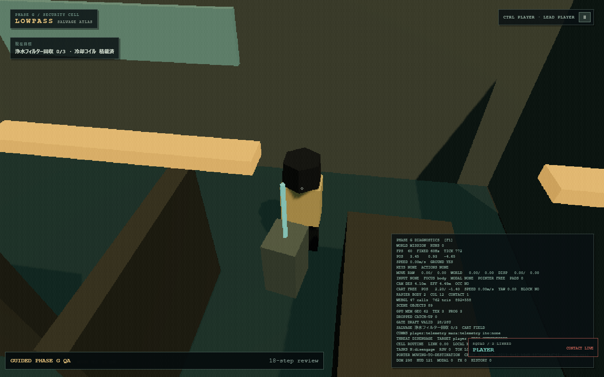
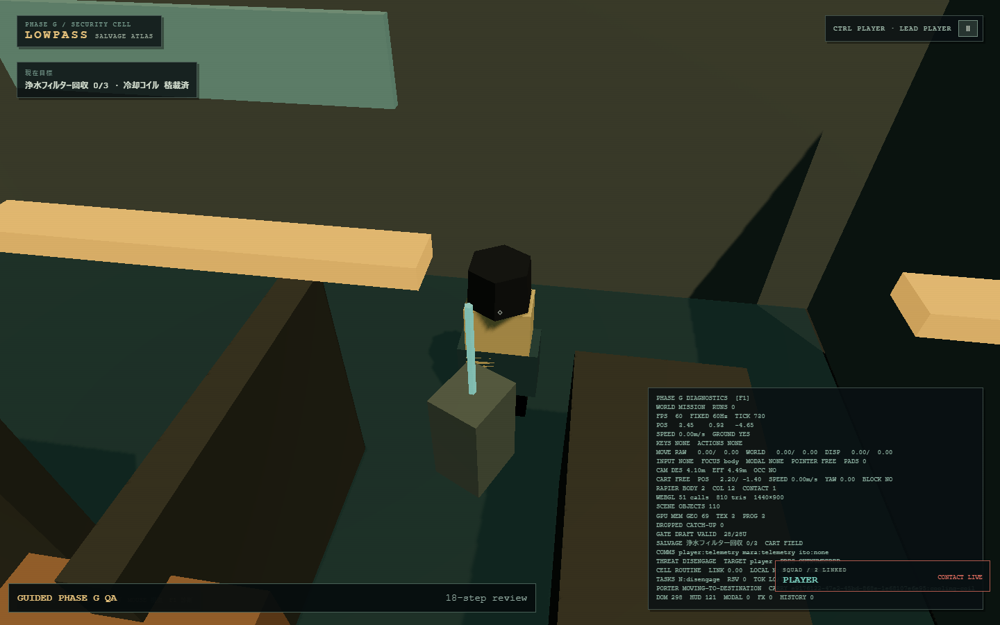

Fixed scenario: 18-step Guided QA · seed phase-g-guided-audit-v1 · routine posture · player control · 2s capture delay.


| Comparison | Draw calls | Triangles | Geometries | Textures | Programs |
|---|---|---|---|---|---|
| Primitive | 49 | 786 | 61–62 | 3 | 3 |
| Canary v1 | 57 | 882 | 69 | 3 | 3 |
| Canary delta | +8 | +96 | +7–8 | 0 | 0 |